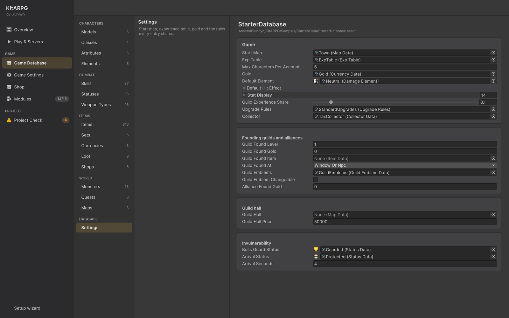

Game Database
Game Database（游戏数据库）页面把所有游戏数据集中在一处：玩家模型、职业、属性、技能、物品、怪物、掉落、商店、任务、地图以及数据库自身的设置。你在左侧按类型浏览，在中间选择条目，在右侧编辑它。它还有两个向导，可以从 3D 模型创建新的玩家模型或新怪物。
在哪里
- KitARPG > Game Database，或
- KitARPG 窗口（
Ctrl/Cmd+Shift+K）中的 Game Database 页面。
数据有问题时，侧边栏会在该页面旁显示问题数量。
游戏数据库是什么
游戏数据库是一个 GameDatabase 资源。游戏通过它按 id 读取所有数据。你在其中列出主要条目（玩家模型、地图、怪物、物品等）；这些条目指向的所有东西（职业的技能、怪物的掉落表、掉落表的物品）会被自动收集。因此添加到职业上的技能无需列出两次就会出现在游戏中。
数据库设置在网络预制体的 Game Instance 上。入门示例在 Assets/Blunnyn/KitARPG/Samples/Starter/Data/StarterDatabase.asset 创建了一个。每次 Play & Servers 启动服务时，Login 和 Central 都会得到它的一份副本 gamedata.json。
布局


该页面使用整个窗口宽度，在工具栏下分为三栏。
工具栏
| 元素 | 作用 |
|---|---|
| Game Database 字段 | 正在编辑的数据库。选择另一个即可切换；该选择会被记住 |
| N problems 胶囊标签 | 数据有问题时显示。Settings 页面会列出它们 |
| Collect referenced | 把数据库只通过引用访问到的每个条目写入它自己的列表，使每个列表显示全部内容。玩家模型不受影响 |
| Export for services | 把 gamedata.json 写入服务源码的 Login 文件夹，供你手动运行的服务使用。与 KitARPG > Export Game Data for Services 相同 |
当项目没有游戏数据库时，页面显示 No game database yet 和 Create game database。选择保存位置；你之后创建的数据会放在它旁边的文件夹中。
分类（左栏）
数据的类型，分组显示，各带计数。计数包括通过引用访问到的条目。
| 分组 | 分类 | 包含 |
|---|---|---|
| Characters | Models | 玩家预制体。模型的职业就是使用该外观的新角色可以选择的职业 |
| Characters | Classes | 角色是什么：每级属性、技能和初始物品 |
| Characters | Attributes | 力量、智力等，以及每点带来的数值 |
| Characters | Elements | 伤害的种类，每种都有自己的抗性 |
| Combat | Skills | 玩家和怪物施放的技能，由效果构成 |
| Combat | Statuses | 增益和减益：中毒、眩晕、护盾等 |
| Combat | Weapon Types | 剑、弓、法杖：每种武器如何攻击和播放动画 |
| Items | Items | 武器、装备、药水、卷轴以及其他所有能放进背包的东西 |
| Items | Sets | 同时穿戴时提供加成的部件。部件在自己的页面上加入套装 |
| Items | Currencies | 金币以及游戏使用的其他货币 |
| Items | Loot | 怪物掉落什么、多频繁 |
| Items | Shops | NPC 商店卖什么、收什么 |
| World | Monsters | 每种怪物的数值、技能、掉落和行为 |
| World | Quests | 目标、奖励以及谁可以接取 |
| World | Maps | 玩家往来的场景及其规则 |
| Database | Settings | 起始地图、经验表、金币以及所有条目共享的规则 |
选中 Items（或其子分类之一）时，物品子分类会在其下方展开：
| 子分类 | 显示 | 新建的是 |
|---|---|---|
| Weapons | 所有武器 | 一把武器；+ New 按钮会提供数据库中的武器类型 |
| Shields | 副手装备 | Off Hand 栏位的装备 |
| Hats | 头部装备 | Head 栏位的装备 |
| Cloaks | 背部装备：披风、背包、翅膀 | Back 栏位的装备 |
| Amulets | 项链和护身符 | Amulet 栏位的装备 |
| Rings | 戒指；角色可戴两枚 | Ring 栏位的装备 |
| Chest | 盔甲、长袍和衬衫 | Chest 栏位的装备 |
| Gloves | 手套、护手和护腕 | Hands 栏位的装备 |
| Legs | 裤子、裙子和护胫 | Legs 栏位的装备 |
| Boots | 靴子和鞋 | Feet 栏位的装备 |
| Cosmetics | 只改变外观的装备 | 时装装备，Head 栏位，不可强化 |
| Ammo | 箭、弩矢以及武器消耗的任何东西 | 弹药 |
| Consumables | 药水、食物、卷轴和书 | 一个消耗品 |
| Gems | 镶嵌在装备镶孔中的宝石 | 一颗宝石 |
| Resources | 材料、符文和掉落物 | 一个普通物品 |
| Quest items | 仅用于任务的物品；商店永远不会收购 | 一个标记为任务物品并绑定的普通物品 |
条目（中栏）
分类的标题和提示、一个搜索字段以及列表。每一行显示条目的图标（没有图标时显示名称首字母）、名称和第二行：id；物品为分类和 id；模型为模型 id 及其职业数量。
- 在搜索字段中输入，按名称或 id 筛选。
- 点击一行进行编辑。双击还会在 Project 窗口中选中该资源。
Up和Down方向键在列表中移动。- 底部的按钮创建新条目：+ New class、+ New skill、+ New weapon 等。当一个分类可以创建多种类型时（Items 可以创建武器、装备、消耗品或普通物品），会弹出菜单询问类型。
新条目命名为 "New ..."，id 由名称生成，保存在数据库资源旁以分类命名的文件夹中（例如 Data/Skills），加入数据库的列表并打开。在它们的字段中重命名。
Models 和 Monsters 分类有各自的按钮，见新建玩家模型和新建怪物。
条目页面（右栏）
页面顶部显示图标、名称、表示类型的胶囊标签（Weapon、Skill、Monster……）和表示 id 的胶囊标签，以及三个按钮：
| 按钮 | 作用 |
|---|---|
| Show file | 在 Project 窗口中选中该资源 |
| Duplicate | 在旁边复制该资源，id 由副本名称生成，加入同一个列表并打开。模型上没有此按钮 |
| Delete | 询问 "Move ... to the trash? Characters that saved its id lose it."（把……移到回收站？保存了其 id 的角色会失去它。）并把资源移到回收站。在模型上按钮为 Remove：把模型从数据库中移除，但保留预制体 |
其下方是资源路径，然后是以卡片呈现的字段，每组字段一张卡片。这些字段与你在 Inspector 中看到的相同。
有些类型在字段上方还有额外的卡片：
- 物品：一张 In game 卡片，显示玩家看到的提示框、稀有度和分类、描述、每项加成（随机加成显示为范围）、装备的等级和职业、出售和收购价格、堆叠、重量、是否绑定，以及物品的图标。
- 带有固定加成的装备："N fixed bonuses that never roll. Turn them into min and max ranges, 25% up and down?"（N 项固定加成从不随机。要把它们变成上下浮动 25% 的最小和最大范围吗？）并附带 Make them roll，它把固定加成转为随机范围。参见装备。
- 模型：一张 Look 卡片，显示预制体的预览（双击打开预制体）、它的职业（第一个标为 "(default)"）以及设置了多少动画。字段下方的 Animations 部分编辑模型的 Character Animations：移动、受击、死亡、用每种武器类型攻击以及施放每个技能的动画片段。没有该组件的预制体会显示 Add Character Animations。
- 地图：一张 Adding a map 卡片，列出地图需要什么以及每部分的进展。参见地图。
Settings
Settings 分类打开数据库自身的字段。数据中发现的问题会列在顶部的橙色框中。列表（模型、职业、物品……）被省略，因为其他分类会显示它们。
| 字段 | 作用 | 默认值 |
|---|---|---|
Start Map（startMap） |
新角色出现的地方，除非其职业另有规定 | None |
Exp Table（expTable） |
每级所需的经验 | None |
Max Characters Per Account（maxCharactersPerAccount） |
一个账号可以拥有多少个角色 | 6 |
Gold（gold） |
怪物掉落和 NPC 支付的钱。与其他货币分开保存 | None |
Default Element（defaultElement） |
在未设置元素的地方使用。留空则使用列表中的第一个 | None |
Default Hit Effect（defaultHitEffect） |
没有其他效果时，作用在被击中者身上的效果 | 空 |
Stat Display（statDisplay） |
数值的图标和名称 | 空 |
Guild Experience Share（guildExperienceShare） |
成员获得的经验中同时给予其公会的比例，0 到 1 | 0.1 |
Upgrade Rules（upgradeRules） |
装备如何强化和分解，除非某件装备有自己的规则 | None |
Collector（collector） |
公会收税员。留空则关闭收税员 | None |
创建公会和联盟
| 字段 | 作用 | 默认值 |
|---|---|---|
Guild Found Level（guildFoundLevel） |
能创建公会的最低角色等级 | 1 |
Guild Found Gold（guildFoundGold） |
创建公会花费的金币。0 为免费 | 0 |
Guild Found Item（guildFoundItem） |
创建公会消耗的物品，例如公会章程。留空：无 | None |
Guild Found At（guildFoundAt） |
从公会窗口、仅在带有 Guild Founding 选项的 NPC 处，或两者皆可 | Window Or Npc |
Guild Emblems（guildEmblems） |
徽章的形状、符号和颜色。留空：公会没有徽章 | None |
Guild Emblem Changeable（guildEmblemChangeable） |
公会以后可以更换徽章。关闭：创建时选择一次 | Off |
Alliance Found Gold（allianceFoundGold） |
创建联盟花费的金币。0 为免费 | 0 |
公会会馆
| 字段 | 作用 | 默认值 |
|---|---|---|
Guild Hall（guildHall） |
每个公会购买会馆后获得一份自己副本的地图。必须是实例化地图。留空：没有会馆 | None |
Guild Hall Price（guildHallPrice） |
公会从其仓库中为会馆支付的金币 | 50000 |
无敌
| 字段 | 作用 | 默认值 |
|---|---|---|
Boss Guard Status（bossGuardStatus） |
当首领召唤的怪物存活时施加在首领身上 | None |
Arrival Status（arrivalStatus） |
玩家在地图中出现或复活时施加在其身上 | None |
Arrival Seconds（arrivalSeconds） |
到达状态持续多久 | 4 |
新建玩家模型
在 Models 中，列表底部有：
- + New player model，在右栏打开向导。
- "Or add a player prefab you already made"（或添加你已经做好的玩家预制体）：一个预制体字段和 Add prefab。当预制体没有 Player Model 组件时会添加一个，并把它列入数据库。从 Project 窗口拖入预制体；场景对象会被拒绝。
向导有四个步骤，以顶部的条显示。已经过的步骤可以点击返回。Cancel 关闭向导且不创建任何东西，Back 返回上一步，Next 继续；当前步骤有问题时 Next 显示为灰色，问题以一行橙色文字显示。
第 1 步：Model
- 把 FBX 或预制体拖到 The 3D model 字段中。旁边会显示预览。
- 阅读下方的状态：
- Humanoid rig：武器放在它的手中，它可以共享套件的动画。
- Generic rig：使用为该骨骼制作的动画，之后在模型上设置手部骨骼。
- No Animator：它不会播放动画。为模型添加 Animator，或在导入设置中把其骨骼设为 Humanoid。
- No skinned meshes：装备通过蒙皮网格替换身体部位，因此该模型显示时不会有装备变化。
- 在 Name 中检查 Display name（由模型名称填入）和 Id（由名称生成，直到你输入自己的）。id 会随角色保存；以后更改它会破坏用它创建的角色。
- 勾选 Own hair only 保留身体自己的头发、耳朵或角：不会为它提供发型。
第 2 步：Classes
- 在 Classes it can be 中，勾选使用该外观的角色可以选择的职业。第一个勾选的是默认职业。
- 要随模型一起创建职业，在 New classes 中按 + New class，输入名称，并可选择在 copy of 中选一个职业，以其属性、技能和装备为起点。x 删除一行。
至少需要一个职业。新职业的名称不能与现有职业 id 相同。
第 3 步：Animations
- Start from a model：选择一个现有模型来复制它的动画（片段、命中时机、按武器和按技能）及其外观目录，或选择 Nothing, start empty。选择模型后：
- Copy its animations（默认开启）。
- Copy the game's own components on it (not the kit's)（默认开启）：你添加到该模型上的组件会连同其值一起复制过来。
- 当一个模型是人形而另一个不是时会显示警告，因为复制的片段可能无法在该骨骼上播放。
- Upper body（仅人形）：Use an upper body mask（默认开启）让角色边走边攻击和施法，双腿仍在移动。Mask 留空则使用套件的遮罩，也可以选择你自己的 Avatar Mask。
动画为空时，之后在模型的 Animations 卡片中放入片段。命中仍会准时生效。
第 4 步：Create
- 检查 Prefab folder。默认是数据库文件夹旁边的
Prefabs文件夹。完整的预制体路径显示在下方。该文件夹必须在Assets内，且不能已存在同名的预制体。 - 阅读 What will be made：带有 Player Model、网络、移动、背包、数值、技能、任务、聊天、好友、队伍、交易、公会、仓库、锻造、邮件、市场、商城、PvP、装备、外观、动画和头顶名字的预制体；职业；动画；遮罩；以及它会加入数据库。
- 按 Create player。
向导创建新职业（在数据库旁的 Classes 中）和预制体，把两者都加入数据库，并打开新模型以供编辑。参见玩家模型。
新建怪物
在 Monsters 中，列表底部有：
- + New monster，打开向导。
- Blank monster data，只创建一个 Monster 数据资源，不带预制体。
第 1 步：Model
- 把 FBX 或预制体拖到 The 3D model 中。
- 状态显示 Animated（你在第 3 步中选择它的片段）或 No Animator（它移动时跳跃，被击中时闪烁，就像示例中的史莱姆；它的攻击仍会准时生效）。
- 检查 Display name。由它生成的 id 显示在字段下方。不能有其他怪物使用该 id。
第 2 步：Combat
Start from a monster 复制另一个怪物的一切：数值、技能、抗性、阶段和掉落。选择 Nothing, start from the defaults 则从新怪物的默认值开始。选择怪物会用它的值填充下面的字段；修改这只怪物不同的地方。
How it fights
| 字段 | 作用 | 默认值 |
|---|---|---|
| Level | 怪物等级，至少为 1 | 1 |
| Rank | Normal、Elite 或 Boss。精英和首领的名牌带有边框；首领在屏幕顶部有血条 | Normal |
| Health | 最大生命值，至少为 1 | 50 |
| Damage | 攻击的最小和最大伤害，以及元素（留空使用默认元素） | 1 到 3 |
| Attack range (m) | 近战约 1.4；射击类怪物更远。至少 0.5 | 1.4 |
| Attacks per second | 至少 0.1 | 0.8 |
| Move speed | 3 | |
| Aggression | Passive、Aggressive 或 Pack（附近的怪物被攻击时加入战斗） | Aggressive |
Rewards
| 字段 | 作用 | 默认值 |
|---|---|---|
| Experience | 击杀获得的经验 | 10 |
| Loot table | 留空：不掉落任何东西。在 Loot 分类中创建掉落表 | None |
| Respawn seconds | 重新出现前的时间 | 30 |
第 3 步：Animations
没有 Animator 时，此步骤只说明没有可选的内容。
有 Animator 时：
- Start from a monster 复制一个有动画的怪物的片段和命中时机。Nothing 从空开始。
- Clips：Idle、Walk、Hit、Death 和 Attack。你选择的片段会替换复制来的片段。空的会被跳过：没有 Hit 它不会退缩，没有 Death 它不会倒下。
- Hit lands at（有攻击片段时显示）：从攻击的 0（开始）到 1（结束），伤害生效的时刻。默认 0.5。
第 4 步：Create
- 检查 Prefab folder（默认是数据库文件夹旁边的
Prefabs文件夹）。 - Render its bestiary icon（默认开启）在创建后绘制怪物的头像。
- 阅读 What will be made：怪物数据、预制体（网络、移动、点击区域、Monster 组件、它的动画和头顶的名牌，没有 Animator 时还有跳跃的身体），以及它会加入数据库。
- 按 Create monster。
数据放在数据库旁的 Monsters 中。复制来的怪物会得到新的头像，而不是原怪物的。新怪物会在列表中打开。要把它放进世界，在地图场景中添加一个 Monster Spawner 并选择它。参见怪物。
单人模式和 MMO
两种模式下数据相同。在 MMO 中，Login 和 Central 读取 Play & Servers 启动服务时写入的副本（gamedata.json），因此修改 Login 用来创建角色的数据（例如职业、初始物品或起始地图）后，请重启服务。地图服务器从其构建中读取数据库，因此修改数据后请重新构建地图服务器。参见 Play & Servers。
提示
- id 保持简短、小写，使用字母、数字、
-和_。Project Check 会对其他字符发出警告。 - 永远不要更改玩家已经拥有的东西的 id。存档指向 id。
- 用 Duplicate 制作变体，例如更强的怪物副本或换色的物品。
- 导入在其他地方制作的数据后，Collect referenced 很有用，可以让每个列表显示游戏真正包含的内容。
常见错误
- 在 Project 窗口中用 Create > KitARPG 创建资源却忘了列出它们。 游戏只认识数据库能访问到的东西。Project Check 会把无法访问的资源列为提示。从本页面创建的条目会自动列出。
- 没有职业的模型。 没人能选择它。数据库会报告 "Player model '...' has no classes"。
- 同类的两个条目使用相同的 id。 只会找到其中一个。Project Check 会把它报告为错误。